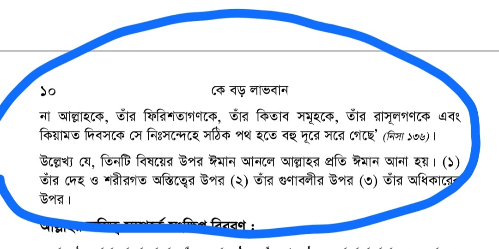

বই- "কে বড় লাভবান
২২ জানুয়ারি, ২০২১
বই- "কে বড় লাভবান"
লেখক- শাইখ আব্দুর রাজ্জাক বিন ইউসুফ
পেজ নং- ১০
এতে তিনি আল্লাহ তায়ালার দেহ ও শরীরগত অস্তিত্বের উপর ঈমান আনার কথা বলেন। এত্থেকে বুঝা যায় যে, আল্লাহ'র দেহ বা শরীর রয়েছে(!) নাউজুবিল্লাহ। অথচ, কোরআন-হাদিসে এর কোনো প্রমাণ নেই; বরং তা ভ্রান্ত মুজাসসিমা-দেহবাদি ফেরকার আকিদা। (আকিদার যেকোনো কিতাবে এ আলোচনা পাবেন)
আমরা জাহমিদের আকিদা সর্বেশ্বরবাদকে ঘৃণা ও রদ্দ করি। তার মানে এই না যে, দেহবাদের আকিদাকে সাপোর্ট বা প্রমোট করি। সাদাকে সাদা কালোকে কালো বলার ও মানার মানসিকতা না থাকলে আপনি হক থেকে দূরে ছিটকে পড়বেন। এমনকি হকের চাক্ষুষ প্রমাণ পেলেও গ্রহণ করতে পারেবন না।
★ তবে কিছুদিন পূর্বে আব্দুর রাজ্জাক সাহেব আকিদা নিয়ে বিভিন্ন বক্তব্যের কারণে বেশ তোপের মুখে পড়েন। পরে অবশ্য তিনি হক বুঝতে পেরে এক বিবৃতিতে জানান যে, তিনি দেহবাদে বিশ্বাসী নন। সুতরাং তিনি তার ভুল শোধরে নিয়েছেন। (প্রমাণ কমেন্ট বক্সে)
কিন্তু বই যেহেতু রয়ে গেছে, তাই সতর্ক বার্তা দিতে এই পোস্ট। বিশেষভাবে যারা তার অন্ধ অনুসণে লিপ্ত, তাদের জন্য এতে রয়েছে বিরাট সবক। তিনি সুদীর্ঘ প্রায় ১০ বছর পর তার ভুল আকিদা শোধরিয়েছেন। আপনি তো এতো সুযোগ নাও পেতে পারেন। যে কারণে আমি বলি, কারও অন্ধ তাকলিদ করবেন না। এতে যেকোনো সময় ভ্রান্তির শিকার হওয়ার প্রবল সম্ভাবনা থাকে।
বই পড়ার আগে বা কারও থেকে আকিদা গ্রহণের ক্ষেত্রে যাচাই করুন। সতর্ক হোন।
জাযাকুমুল্লাহ।
